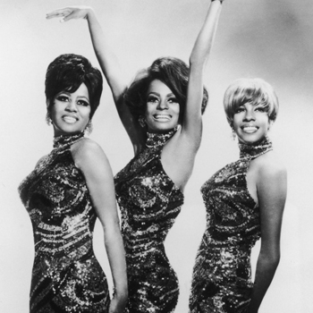
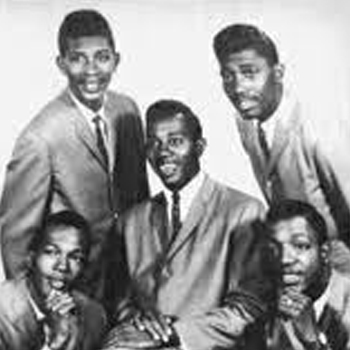
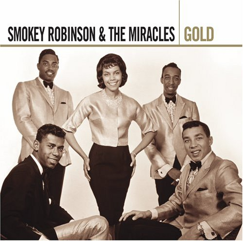

The Primes
Childhood friends Eddie Kendricks, Paul Williams, Kell Osborne, and Wiley Waller formed a doo-wop group called the Cavaliers in their hometown of Birmingham, Alabama, in 1955. Reduced to a trio after Waller left the group in 1957, Kendricks, Williams, and Osbourne left Birmingham in order to break into the music business. After first moving to Cleveland, Ohio, they settled in Detroit. The Primes, as the doo-wop trio was now called, were well-known around Detroit for their meticulous performances. Group manager Milton Jenkins even created a sister group for the Primes called the Primettes, who later became the legendary Supremes, recruiting Florence Ballard, Mary Wilson, Diane (later Diana) Ross, and Betty McGlown for the spin-off act. Eddie Kendricks was already becoming a local "Matinee Idol", and Paul Williams was known for his powerful baritone voice, having an adult style even as a teenager.
The Distants
Otis Williams had moved from his native Texarkana, Texas to Detroit as a young boy, to live with his mother. By 1958, he was the leader of Otis Williams & the Siberians, a doo-wop group that included Williams, his friend Elbridge "Al" Bryant, James "Pee-Wee" Crawford, Vernard Plain, and Arthur Walton. This quintet recorded the single "Pecos Kid/Have Gun Will Travel" backed with "All of My Life" for a label run by local radio deejay Senator Bristol Bryant. The single never took off outside the local Detroit market, and the Siberians changed their name to The El Domingoes shortly afterward.
At this time, more changes took place. Montgomery, Alabama native Melvin Franklin replaced Arthur Walton as the bass singer and Franklin's cousin, Detroit-born Richard Street, replaced Vernard Plain as lead singer. The group soon signed with Northern Records, run by Johnnie Mae Matthews, who renamed the group The Distants. The Distants recorded two singles for Northern, "Come On" (1959, featuring additional background vocals by the Andantes), and "Alright" (1960).[8] Between these two releases, Albert "Mooch" Harrell replaced Pee-Wee Crawford. "Come On" was a local hit for the Distants, and the Warwick label picked the record up for national distribution. After the release of "Alright", Matthews appointed Williams the group leader, and the group was renamed Otis Williams & the Distants. Though Otis Williams had a pleasant, but unremarkable, lead voice, he organized the group and so became the defacto leader, as he would later with the Temptations.
Influences and colleagues
The Primes and the Distants were influenced by several Detroit groups, the most famous of which was the Miracles led by Smokey Robinson. The Miracles were known for their stage show, and their pop success was something for which both groups strived. Other important inspirations included the Cadillacs, Frankie Lymon & the Teenagers, the Drifters, and the Isley Brothers.
The various members of the Primes and the Distants, who would later become part of the Temptations, met a number of their future Motown bandmates, labelmates, and producers during the early part of their careers. Melvin Franklin had been a member of the recording group the Voice Masters, which also included among its ranks Lamont Dozier, his cousin David Ruffin, and another cousin, Jackie Wilson.[8] The musicians at the recording session for the Distants' "Come On" included James Jamerson on bass, the Andantes on background vocals, and future Temptations producer Norman Whitfield on tambourine.